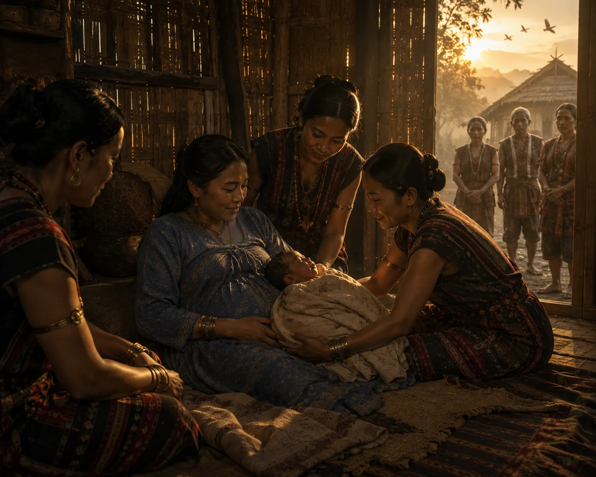

Birth of Konseng in the Naga Foothills
c. 1495 · The coming of Sukaphaa

The exiled queen gives birth to prince Konseng among the Nagas, raised in mountain traditions before returning to court.
Sources have not yet been catalogued for this record.
People: Konseng Barpatragohain, Supimphaa